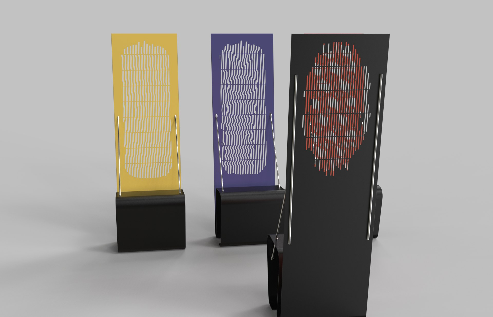
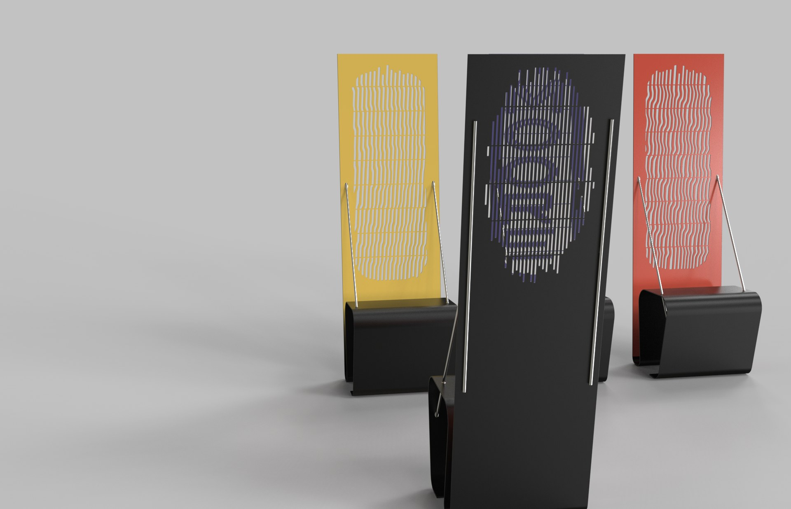
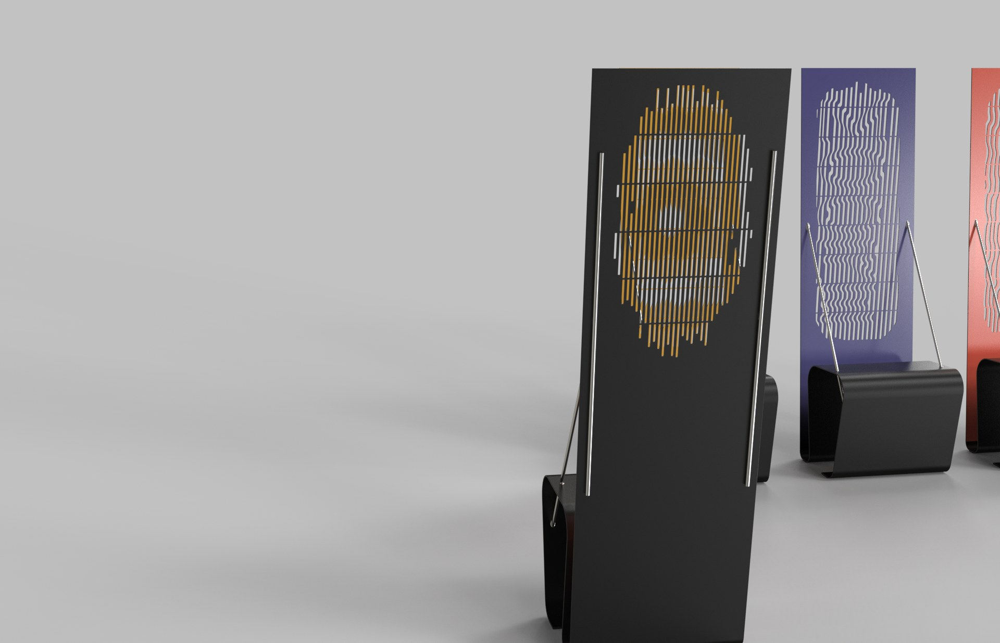

Same camera, three rear chairs. Each colour carries one pattern, and each pattern appears only where it is seen through Chair A.

a
b
c9.1Cubes · red
Faces trade light and dark.
φ = 0, ⅓, ⅔ on the three faces; 100 mm cells.
9.2MOORE · blue
The word flips as you pass.
φ = ½ inside the letters, 0 outside.
9.3Hexagonal ripple · yellow
Rings travel outward.
φ grows with distance from the centre; 70 mm cells.